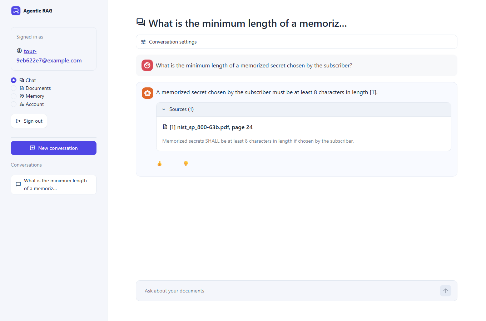
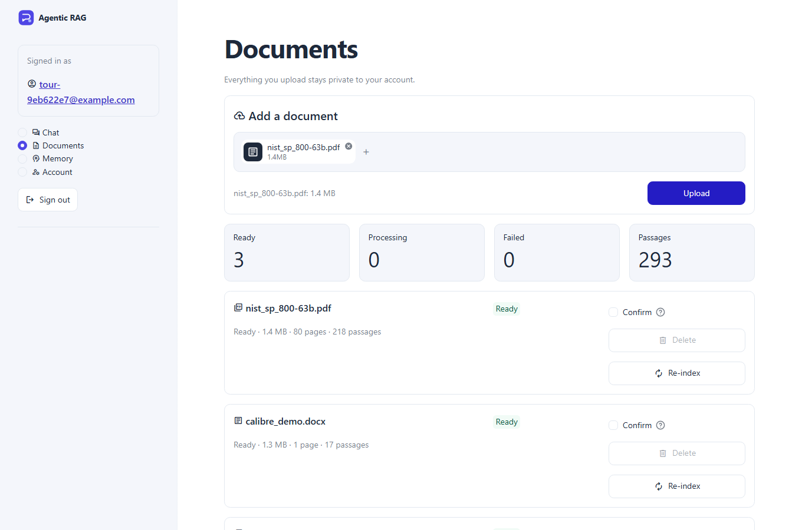
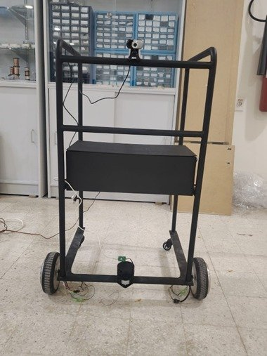

AI & machine learning engineer, MSc AI at CentraleSupélec
Mohammad Taan Al Akoum
I build AI that
reads machines.finds the right answer.drives itself.knows when it’s unsure.
A mechatronics engineer turned AI researcher. I build multimodal models for predictive maintenance, production LLM systems whose answers can be checked, and robots, and I ship them as tested, reproducible code that holds up outside the notebook.
Open to a 6-month end-of-studies internship (stage de fin d’études) from April/May 2027 in machine learning, computer vision, LLMs, robotics or industrial AI. Based in Massy, mobile across France and the EU.
In numbers
- Automated tests, agentic RAG platform
- 1,19393% coverage, on real PostgreSQL, Redis and Qdrant
- Automated tests, research pipeline
- 512passing, 88% coverage in fresh-env CI
- GPU training runs
- 80+on NVIDIA A100, Ruche cluster (SLURM)
- Paper claims audited against code
- 35items, OmniFuser (arXiv 2025)
- Real-document questions, browser test
- 6 / 6correct, with server-verified page citations
- Autonomous robot, built end to end
- 500 USD>90% indoor navigation success
What I bring to a team
Four areas I have shipped working systems in. Each card links to the proof.
Multimodal and industrial AI
Fusing signals, images and text with frozen foundation models; remaining-life forecasts with intervals; leakage-free evaluation.
Predictive maintenance, OmniFuser, RUL-FuseProduction LLM systems
A multi-user RAG platform: LangGraph agent, hybrid search with reranking, citations checked by the server, measured on real documents.
Agentic RAG platformRobotics and autonomy
ROS navigation, lidar SLAM and localisation, speech and vision on embedded hardware, from the frame and motors up.
Autonomous smart walkerML engineering
Tests, CI, type checks, real-browser end-to-end runs and resumable GPU-cluster jobs, so a colleague can rerun any result.
1,700+ tests, 80+ A100 runsHow I work
The skills that carry over to any team, whatever the stack. Each one comes with where I have used it.
Framing the problem
I turn a vague goal into measurable objectives and a definition of done before writing code.
Three research goals; walker objectives set from user needsRigour and critical thinking
I compare against simple baselines, test for leakage and question results that look too good, including published ones.
35-item paper audit; leakage probe ruled out 2 photo typesPlanning and risk
I break work into stages with decision gates and a fallback, so one failed idea cannot sink a project.
Decision gates; test set sealed until the design freezeClear communication
I write documentation people can follow and explain technical results to both specialists and non-specialists.
Project logs, runbooks and reports; jury presentationsWorking across disciplines
I speak the language of operators, technicians and ML engineers, and translate between them.
Cement plant control room; BMW and Renault workshopOwnership and fast learning
I take a system from idea to working result and pick up new tools quickly when the job needs them.
Walker built from frame to software; new stacks per projectLanguages: English C2 (IELTS), Arabic native, French A2 and working towards B2.
Production LLM project, built solo, autumn 2026
An agentic RAG platform whose answers you can check
A multi-user web platform: people upload their own PDFs and Word files and ask questions about them. A LangGraph agent searches, answers and cites its sources. The server checks every citation against the passages it actually retrieved, and one user can never see another user’s data.
- Answers with proof. Every citation names the document, page and exact excerpt. If no citation can be verified, the answer is a refusal, never a guess.
- Built like a product. FastAPI, PostgreSQL, Qdrant, Redis/Celery and Streamlit, with background ingestion, retries and live progress.
- Runs on a laptop. A free hosted model through any OpenAI-compatible endpoint; no GPU and no paid service.


How a question and a document flow through the system
agent and pipeline steps what the user sees
- Automated tests
- 1,193
- Line coverage
- 93%
- 80-page standard, parsed and indexed
- 244 s
- Answer time, laptop CPU
- 3–7 s
Measured on real documents, not just a demo set
28 hand-written questions on NIST SP 800-63B and “Attention Is All You Need”. The same pipeline scored 0.94 on a synthetic set; I report both. On real text plain fusion is worse than dense search alone, and the cross-encoder is what recovers it.
Engineering that holds up
- Isolation. An owner filter on every vector query and an ownership check on every route; another user’s id returns the same 404 as a missing one.
- Reliability. Transactional outbox, idempotent tasks, a persisted document state machine, and Postgres checkpoints with per-conversation locks and idempotency keys.
- Security. Argon2id, rotating refresh tokens, two-factor login, sandboxed parsers that reject decompression bombs and XXE, and blocking of image links that could leak data.
- Operations. OpenTelemetry traces from request to worker, a quota guard with model fallback, and a Redis answer cache.
What I learned
A green test suite is not proof. Driving the real app in a browser with an 80-page standard found two bugs that almost 1,200 automated tests had missed: maths letters stored as “𝑁” instead of “N”, and grouped citations like [S1, S2] shown to the user unconverted. Both are fixed, and both now have tests.
Stack: Python 3.12, FastAPI, Pydantic, SQLAlchemy (async), LangGraph, Qdrant, FastEmbed (ONNX), Docling, PostgreSQL, Redis, Celery, Streamlit, OpenTelemetry, pytest, Playwright, Ruff, Pyright. Source code available on request.
Flagship research, LGI laboratory, CentraleSupélec, Oct 2026 to present, supervised by Zhiguo Zeng
Multimodal foundation models for predictive maintenance
One model that reads machine vibration, camera images and maintenance text together, adapts to a new machine from a handful of labels, and says how sure it is. The aim: catch faults early, forecast remaining useful life, and give engineers alerts they can trust.
- No ready-made data. No public dataset pairs vibration, images and text, so inputs can be missing and the model must cope.
- Different rhythms. Kilohertz sensors, one photo per pass, one note per machine.
- Misleading benchmarks. Shortcuts inflate scores, so every split follows physical units.
Architecture
frozen, pretrained trained output
Roadmap, stage by stage
- Window storesband-limited model input, labels, context sentences
- Feature cacheskeyed by store, checkpoint and arm; resumable
- Gate 1sensor encoder chosen on validation units
- Plan B expertsevidential, calibrated; the fallback model
- Gate 2fusion search with nested selection
- Pretrainingmasked and contrastive, one token space
- Adaptationlinear probe, LoRA, few-shot
- Unseen machinesKAIST, Paderborn, PHM 2010, run once
built and tested in progress held out until every choice is final
Evaluation I can defend
Trust checks built in
- Leakage probes. Can the context text alone, or the dataset identity, predict the label? If yes, the benchmark is broken.
- Physics check. Band occlusion asks whether a model looks at the bearing’s defect frequencies, with a weight-randomisation sanity test.
- Healthy-only anomaly detection. Scored on alarm onset and false alarms on run-to-failure bearings.
- Honest statistics. Schedule and persistence baselines, paired Wilcoxon tests with Holm correction, intervals from resampled units.
- Planted bugs. Off-by-one targets and leaky normalisers make tests fail, which proves the tests work.
Datasets
| Dataset | Machine | Signals | Role |
|---|---|---|---|
| CWRU | Bearing test rig | Vibration, drive and fan end | Source; physics check |
| XJTU-SY | Run-to-failure bearings | Vibration, two axes | Source; RUL, anomaly detection |
| Nonastreda | Milling | Cutting forces, tool photos | Source; tool wear |
| MATWI | Milling | Sensors, insert photos | Source; tool wear |
| Paderborn | Bearings | Vibration, motor current | Artificial damage as source; real damage held out |
| KAIST | Motor test bed | Accelerometers, current, temperature | Held out; unseen fault types |
| PHM 2010 | Milling | 50 kHz force and vibration | Held out; flank wear |
Engineering
| Python 3.11 | Python 3.12 | |
|---|---|---|
| Ubuntu | lint, tests | lint, tests |
| Windows | lint, tests | lint, tests |
GitHub Actions with Ruff and Pyright; a weekly job checks that every data source still serves the files used. Resumable SLURM jobs record each configuration, seed and data checksum, so any result can be rerun and changed settings are refused, never silently mixed.
My role
- Surveyed 15+ papers and scored five candidate architectures against the goals; kept a fallback with a decision point.
- Audited my own plan and closed 24 gaps before running anything, five of which would have biased results.
- Wrote, tested and benchmarked the full pipeline in PyTorch, from downloader to report.
github.com/taanakoum/Multimodal-AI-for-Predictive-Maintenance
Reproducibility study, Oct to Nov 2026
Reproducing OmniFuser, and auditing what the paper leaves out
Before building on a published multimodal model for tool-wear prediction, I rebuilt it as a tested PyTorch package and checked every printed detail against the code. Reproducing first means knowing what a method really does before trying to beat it.
The architecture, as rebuilt
35 paper details, checked one by one
- Match the paper
- Match, with a documented choice where the paper is silent
- Deviation, behind a switch
- Forced by the data
- Not verifiable
Inconsistencies in the paper
One equation cancels to a constant; another contradicts the stated fusion sum; a gate width and two loss equations are ambiguous; symbols are reused; tables disagree with each other. Each is documented with the choice made.
Problems in the data
134 of 512 milling passes were duplicate recordings. The run number alone predicts the wear class, and copying the label of the photo shown beats the published model: a shortcut, not learning.
What changed as a result
A leakage-free leave-one-tool-out protocol with schedule and persistence baselines, deduplication, paired tests and bootstrap intervals, now standard in the main pipeline.
51 training runs on Ruche A100 GPUs: main runs, ablations, image encoders, prediction heads, paper-literal settings, deduplication, missing modality and sensitivity. github.com/taanakoum/OmniFuser
MSc research, LGI laboratory, CentraleSupélec, Nov 2026 to present; design freeze 1 December, results mid-December
RUL-Fuse: how long does this milling tool have left?
RUL-Fuse predicts the remaining useful life of a milling tool, in seconds of cutting and with an interval, from cutting forces and photos (Nonastreda: ten tools run from new to dulled). The network is not the hard part. The hard part is defining the target, keeping shortcuts out and beating baselines that are surprisingly strong.
- A precise target. Failure is the first “dulled” pass confirmed by two of the next three. The horizon is 1,500 s of cutting, with a prediction at every 10 s segment.
- Causal by construction. A photo taken after a pass only feeds later predictions, which removes a look-ahead leak in the published set-up.
- A sealed test set. 10-fold leave-one-tool-out, three seeds. Test numbers stay locked until the design freeze.
Which photos may the model see?
Chip and workpiece photos follow the labelling schedule, not the wear, so they were excluded before any remaining-life result was seen. Tool photos behave like true wear and were kept.
The baseline ladder
I gave the published OmniFuser architecture a remaining-life head and trained it on the same folds (30 A100 fits). It over-fitted the eight training tools: training error fell 50-fold while validation barely moved. With ten tools, a simple usage rule is the bar to clear, and every RUL-Fuse decision is judged against it. *Not deployable: it assumes the tool is already in its last 1,500 s.
Decisions behind gates
Sensor encoder, fusion family, augmentation and output head are each picked at a gate on validation tools, and recorded before the results that depend on them.
Compute on a budget
SLURM arrays on Ruche A100s with a GPU health probe, cached feature stores, and reuse of identical fits. The remaining plan dropped from about 1,690 fits to 760 without changing a single decision.
Status
Data audit, task definition, feature caches and the leakage probe are done, and the first fusion gate is training on Ruche. Final results are due mid-December.
Final-year capstone, Rafik Hariri University, 2024 to 2025, designed and built end to end
An autonomous walker you steer with your voice

Visually impaired people struggle to move safely indoors. A cane senses only what is next to it and gives no route; electronic aids are expensive or need new infrastructure. Say “take me to the kitchen” and this walker works out where it is, plans a safe route and drives there, avoiding obstacles on the way.
- Navigation success, indoor
- >90%
- Voice to motion
- 0.8–1.2 s
- Localisation drift
- 5–12 cm
- Obstacle range
- 0.15–6 m
| Compute | Raspberry Pi 4 runs ROS Noetic, speech and vision; Arduino Uno drives the motors |
|---|---|
| Sensing | RP-Lidar A1 (360°, 12 m), webcam, microphone |
| Actuation | Hoverboard motors, differential drive, motor drivers |
| Cost | About 500 USD in parts |
From a spoken sentence to wheels turning
Where the time goes
Speech recognition dominates the delay; planning and control stay well under a quarter of a second. AMCL re-localises in 1.5–3 s, scan matching runs at 8–12 Hz.
How the pieces talk
| ROS topic | Carries |
|---|---|
/scan | 360° lidar distances, to SLAM, AMCL and costmaps |
/transcribed_text | the recognised sentence, Whisper to parser |
/move_base_simple/goal | where to go, in map coordinates |
/detected_color | the colour the camera sees |
/cmd_vel | speed and turn rate, to the Arduino |
Experience and education
Engineering first, then AI. Internships in a cement plant’s control room and a BMW and Renault service centre taught me what real-world data looks like before I started modelling it.
BEng Mechatronics Engineering, Rafik Hariri University, Lebanon
Graduated with distinction, GPA 85.65/100 (French equivalent: mention Très Bien); Dean’s and President’s honour lists. Also built: SI engine simulation in MATLAB, smart parking in TIA Portal, HVAC design to ASHRAE.
Automotive Diagnostics Intern, Bassoul & Hneine (BMW, Renault), Beirut
Read fault codes alongside live ECU sensor data, correlating codes with measured behaviour instead of swapping parts on a code alone.
Reliability & Controls Engineering Intern, Ciment de Sibline, Lebanon
Programmed and validated PLC ladder logic (TIA Portal) for the cooling sequence and gear-rim lubrication of a ball mill whose downtime halts the line. Trended SCADA signals against alarm thresholds to find early warnings of lubrication, cooling and drive faults.
MSc Artificial Intelligence, CentraleSupélec, Université Paris-Saclay
Machine learning, deep learning, computer vision, NLP and LLMs, reinforcement learning, MLOps. Spring 2027: advanced deep learning, predictive maintenance, AI planning, multi-agent systems.
Research, multimodal foundation models for predictive maintenance, LGI
Building one model that fuses sensors, images and text, adapts from a few labels and says how sure it is; within it, RUL-Fuse forecasts the remaining life of milling tools.
The toolbox, in use
Where each concept has actually been applied, across five projects.
| Concept | Predictive maintenance | OmniFuser | RUL-Fuse | Agentic RAG | Smart walker |
|---|---|---|---|---|---|
| Deep learning | |||||
| Transformers and attention | ● | ● | ● | ● | ● |
| CNNs | ● | ● | |||
| Graph attention (GAT) | ● | ● | |||
| Self-supervised and contrastive learning | ○ | ||||
| LoRA, PEFT fine-tuning | ○ | ||||
| Uncertainty and prediction intervals | ● | ● | |||
| AI engineering | |||||
| Agent orchestration (LangGraph) | ● | ||||
| Retrieval, reranking, structured output | ● | ||||
| Evaluation and leakage-free benchmarking | ● | ● | ● | ● | ● |
| CI, testing, experiment tracking | ● | ● | ● | ● | |
| GPU cluster, parallel training | ● | ● | ● | ||
| Software and data | |||||
| APIs and databases (FastAPI, PostgreSQL) | ● | ||||
| Background jobs (Celery, Redis) | ● | ||||
| Security, multi-user isolation | ● | ||||
| Sensing and robotics | |||||
| Sensor fusion, signal processing | ● | ● | ● | ● | |
| Speech and computer vision | ● | ||||
| Real-time robotics (ROS) | ● | ||||
● built and used ○ in progress
- Machine learning and AI
- Python, PyTorch, scikit-learn, NumPy, Pandas, OpenCV; multimodal fusion, time series, anomaly detection, foundation models (DINOv2, MOMENT, PatchTST), uncertainty quantification, explainable AI
- LLMs and RAG
- LangGraph, LangChain, Docling, Qdrant (dense + BM25 hybrid), cross-encoder rerankers, FastEmbed (ONNX), Hugging Face, Sentence Transformers, structured output with Pydantic
- Backend and data
- FastAPI, Pydantic, SQLAlchemy (async), Alembic, PostgreSQL, Redis, Celery, Streamlit, OpenTelemetry, server-sent events
- MLOps and HPC
- SLURM, NVIDIA A100, Lightning AI, Linux, Git, GitHub Actions, pytest, Playwright, Ruff, Pyright, uv, experiment tracking
- Robotics and industrial
- ROS, lidar SLAM, AMCL, sensor fusion, C++, Arduino, Raspberry Pi, MATLAB; PLC (TIA Portal), SCADA, condition monitoring
- Languages
- English C2 (IELTS); Arabic native; French A2, working towards B2
Let’s build something that works.
I’m looking for a 6-month end-of-studies internship from April/May 2027 in machine learning, computer vision, LLMs, robotics or industrial AI, anywhere in France or the EU.
© 2026 Mohammad Taan Al Akoum. Massy, France.